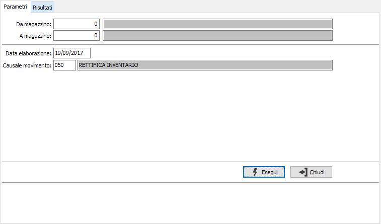
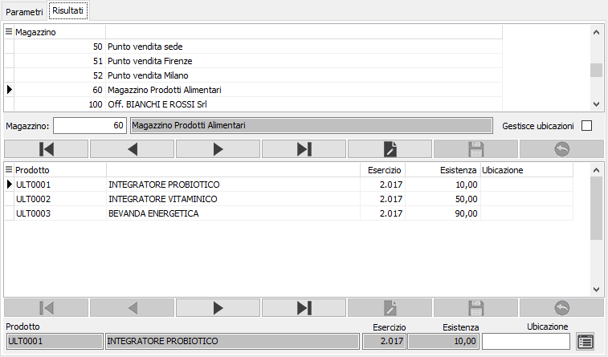
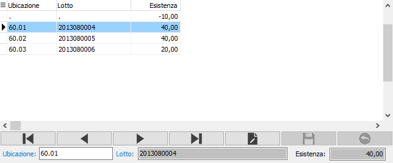

Gestione dettaglio giacenze magazzini
Il programma, utilizzabile solo sulla versione Enterprise e da chi utilizza i moduli per la gestione delle ubicazioni, consente di abilitare per i magazzini la gestione delle ubicazioni assegnando un dettaglio nuovo al saldo delle giacenze alla data di elaborazione.
Il programma è orientato a soddisfare l'esigenza che si potrebbe manifestare al momento in cui un magazzino debba essere gestito ad ubicazioni che fino al momento non ha mai avuto; ad esempio un magazzino che si decide debba essere gestito ad ubicazioni a partire da una certa data; la procedura consente di convertire le giacenze, che non erano ad ubicazioni, in giacenze per ubicazione.
La finestra si compone di due sezioni, la prima consente l'inserimento dei parametri di selezione, la seconda permette la gestione dei dati selezionati.

DA MAGAZZINO: eventuale codice del magazzino, da cui si desidera iniziare la selezione. Confermando a vuoto, la selezione inizia con il primo magazzino valido. Sul campo è attiva la ricerca (F9).
A MAGAZZINO: eventuale codice del magazzino, con cui si desidera terminare la selezione. Confermando a vuoto, la selezione termina con l’ultimo valido. Sul campo è attiva la ricerca (F9).
DATA ELABORAZIONE: indica la data a cui deve essere effettuato il controllo delle giacenze; viene proposta la data di sistema; questa data sarà utilizzata per la generazione dei movimenti di magazzino.
CAUSALE: inserire la causale di magazzino idonea alla generazione dei movimenti (causale di carico). Sul campo è attiva la ricerca (F9) sulla tabella Causali magazzino di carico.
Premendo il pulsante Esegui si dà inizio all'elaborazione che porta alla seconda sezione 'Risultati' da cui effettuare la vera e propria assegnazione delle giacenze alle ubicazioni.

La finestra è divisa in due sezioni: quella superiore contiene i magazzini selezionati e da cui è possibile impostare la gestione delle ubicazioni. La sezione inferiore mostra le giacenze dei prodotti presenti nel magazzino selezionato nella sezione superiore.
è possibile, una volta specificato nella sezione superiore il magazzino, scorrere i relativi prodotti ed inserire l'ubicazione nell'apposito campo; al salvataggio del prodotto viene richiesto se associare l'ubicazione inserita a tutti i prodotti presenti che non hanno ancora l'ubicazione assegnata.

Inoltre tramite il pulsante Dettaglio è possibile inserire manualmente le ubicazioni con le relative quantità, tramite la finestra mostrata a lato dove è possibile inserire dettagliatamente i dati; all'uscita da questa finestra viene effettuato un controllo di coerenza tra le quantità inserite e l'esistenza del prodotto.
Al termine delle operazioni premendo il tasto F10 oppure il bottone Salva sulla tool saranno rese effettive le modifiche, generati i movimenti di magazzino ed aggiornati i prodotti. I dati inseriti daranno origine ad un inventario fisico.